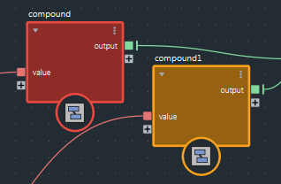
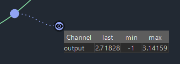
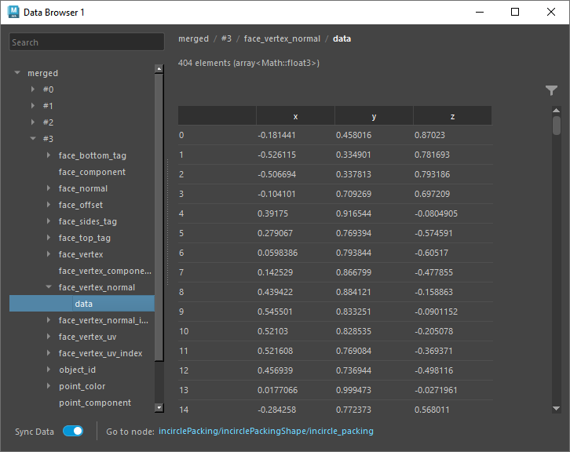
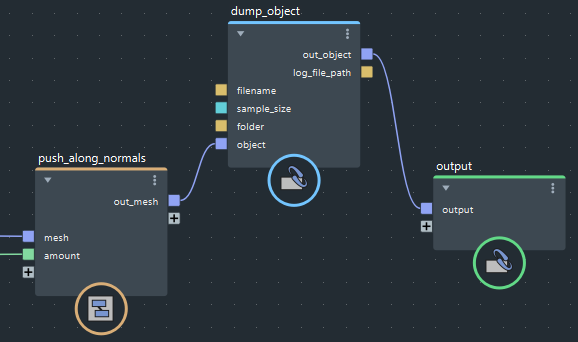

使用复杂图表时，您可能会遇到需要诊断和调试的问题。有一些基本工具可以帮助您完成此任务。
有问题的节点以不同颜色亮显。如果亮显的节点为复合，请进入以查看哪些内部节点有问题。

将指针悬停在节点上以在信息栏中查看完整消息。
通过观察点，您可以查看流经连接的那些值的相关信息。
若要添加观察点，请右键单击连接并选择“设置观察点”(Set Watchpoint)。可以通过单击眼睛图标来隐藏或显示数据。

可以通过将观察点的眼睛图标或表标题拖动到图表视图中的任意位置，将观察点与其连线分离。表将连接到连线，以显示要显示哪些数据。
若要将观察点返回到连线，请双击眼睛图标。也可以通过按住 Alt+Shift 并拖过虚线来移除观察点本身。或者，在眼睛图标上单击鼠标右键，然后选择一个选项。
添加观察点后，图表仍是空的，直到再次执行图表。您可以通过更改输入或在模拟情况下推进帧来强制执行图表。
仅当数据流经连接时，观察点才会更新。如果观察点位于不会引出图表输出的连接上，或者如果因 if 节点而未对观察点进行解算，则不会更新观察点。
观察点显示的信息具体取决于数据类型：
在 Maya 中使用缓存播放时，观察点不会更新。
数据浏览器提供了比观察点更详细的关于沿连接流动的值的信息。它们甚至可以显示数组中包含的对象的各个特性值。

在数据浏览器中查看值：
在连接或现有观察点上单击鼠标右键，然后选择“在数据浏览器中打开”(Open in Data Browser)。如果已打开一个或多个数据浏览器，则可以在新数据浏览器中打开数据或重用现有数据浏览器。
请注意，如果连接上没有观察点，则会创建一个观察点。
使用左侧窗格选择要在右侧窗格中查看的数据。如果需要，可以：
如果在图表中工作时不需要查看更新的值，可以通过禁用“同步数据”(Sync Data)来加快交互速度。当您需要再次查看当前值时，只需将其重新启用。
数据浏览器窗口可以拖动并停靠在工作区中任何合适的位置。
当数据浏览器中的信息过多而无法搜索或扫描时，可以将对象信息输出到文本文件。
dump_object 节点添加到图表中。filename。sample_size 设置为要从数组中包含的最大项数。这样可以避免来自大型对象的大文件。object 输入。out_object 输出连接为图表的输出。通常，您只需从上游节点替换原始连接即可。
dump_object 的至少一个输出必须引出图表输出，否则将不会执行节点。